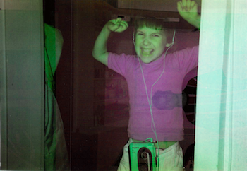

Dominic LooserText und Grafik

Manchmal baue ich potentielle Tassen-Imperien auf. Manchmal schreibe ich Texte und trage sie auf Bühnen vor.
Häufig entwickle ich Webseiten, selten layoute ich Bücher. Da wären noch die T-Shirts und die Postkarten. Sehr häufig schlafe ich.
Offen für Aufträge oder Kollaborationen jeglicher Art. Webseiten, Text, Typographie – you name it. Freue mich über kürzere oder längere Zeilen in meinem Postfach.